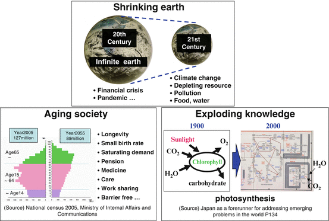

In Chap. 1, we considered demand by roughly classifying it into two types: “diffusive demand” and “creative demand.”
The “paradigm of the twentieth century and before” was characterized by diffusive demand. The paradigm was constituted by a material desire to satisfy needs for food, clothing, and shelter, as well as transportation, and social mobility. Many of the industries that came into being in the nineteenth and twentieth centuries were intended to satisfy such desires. I describe those material desires as diffusive demand leading to a “saturation of man-made objects
.”
It follows that new demand in the twenty-first century will be generated by a new paradigm. Thus, in this chapter first describes what the paradigms
of the twenty-first century are and then reflects on the role played by the knowledge
explosion, one of those paradigms, and the role played by information technology, which looks as if it came into being to solve problems created by the knowledge explosion.
Exploding Knowledge, Limited Earth, and Aging Society
What are the paradigms
of the twenty-first century? I believe there are three, which I classify as “exploding knowledge
,” “limited earth,” and “aging
society” (Fig. 2.1).

Fig. 2.1
Paradigm in the twenty-first century
These three paradigms
do not represent anything that is either good or bad for humanity. Each constitutes a basic framework containing both light and shadow.
For instance, there has been an explosive increase in knowledge
. It may not be a gross exaggeration to say that almost everything humanity desires can be achieved if the correct knowledge can be employed at the correct place and in the correct manner. Even the problem of reducing carbon dioxide emissions, which the world now faces, can be easily solved if the best knowledge human beings have can be diffused to all six billion humans on Earth.
In this sense, it is good that knowledge
has increased explosively. That, however, has made it difficult, at the same time, to grasp the whole picture, which is composed of individual pieces of knowledge. It is now difficult for people who need the correct knowledge to acquire and use it at the correct time and place.
The second paradigm, a “limited earth,” refers to the fact that the basis for sustaining humanity, which hitherto could be regarded as infinite, has come to be clearly recognized as being limited due to the expansion of human activities. Japan is a global front-runner in many areas responding to this issue. Japan’s technologies and social system are at the top level in the world in a wide range of areas including high energy
efficiency, high resource-use efficiency, integration of environmentally non-destructive technologies, and highly efficient water supply systems.
Regarding the third paradigm—the “aging
society”—only its critical consequences for Japan, which is aging most rapidly among the countries of the world, have been highlighted. The entire world, however, will become an aging society before long.
When I talk with Americans about the aging
society, they say, “Japan is in a serious situation. We will have no shortage of workers because we have adopted a policy of allowing immigration.” This understanding, however, is wrong. When China becomes an aging country, the United States will also become an aging country at roughly the same time. At that time, the availability of young Chinese immigrants will decrease.
In fact, according to publications (2012) of India’s Registrar General and Ministry of Health and Family Welfare, the fraction of India’s total population accounted for by the elderly over the age of 60 reached 7.5 % in 2010. Moreover, they showed a projection that this fraction would reach 12 % in 2025. If it continues to grow at this pace, as India’s Education Minister has said, the elderly fraction will surpass 20 % in 2040 and the likelihood is high that India will become a genuine aging society. In India, along with the rise in the fraction of elderly people, the health problems associated with this generation are also growing more severe. For instance, the prevalence of diabetes has reached 3 % in rural areas and 9 % in urban areas, and thus in India too the problems and issues of the aging society that need to be resolved are becoming obvious. The problem of the aging society is no longer a problem only for Japan and China, but is becoming a problem of global scale.
If the present trend continues, within the first half of the twenty-first century, coupled with an increase in economic and productive activities in emerging countries due to increases in population and incomes, the entire global environment will deteriorate and a shortage of resources will accompany the aging
of society (WWF et al 2012). The entire world will fall into the same situation Japan experienced and responded to successfully, and will face the same difficulties Japan faces now.
Most people already have some understanding of the “limited Earth
.” Everyone also intuitively understands the “explosion of knowledge
” if it is explained. It is not so well understood that the “aging
society” is understood as an issue common to all humanity. Conversely, for this reason, it is significant for Japan to take the global initiative to create solutions for the challenges of an aging society.
Negative Legacy of Intellectual Activities
Among these three paradigms
, let us first in this chapter what I mean by the paradigm of “exploding knowledge
” Environmental and resource problems have been called the negative legacy of the twentieth century: these were brought about by material human activities (WCED 1987). On the other hand, there is a negative legacy of intellectual human activities: the problem is that an increase in vast amounts of specific and often fragmented knowledge
has made it extremely difficult to grasp the whole picture.
A typical example is the year 2000 or the Y2K problem with computers, which is still relatively fresh in our memories. People had computers store years using their last two digits of the four-digit year; for example, the year 1990 was stored as “90.” A great fuss was made when it was thought that a variety of things, ranging from strategic missiles and automobiles to electricity and gas infrastructure and home appliances, might fail when the year turned to 2000 in the Western calendar because computers would not be able to distinguish between the year 1900 and the year 2000.
Everyone concerned was aware of each problem in his or her field. For instance, gas companies confirmed that no problem would occur by inspecting and examining processes from manufacturing gas to supplying it to households. They did not know, however, how the memory chips of microcomputers embedded in gas water heaters of baths in households would react because these were out of their jurisdiction.
No big problems occurred as a result. What is important, however, is the fact that no one in the world was able to foresee what impact the simple problem of representing a year in the Western calendar by its last two digits would have on the entire Earth.
On March 11, 2011, a large earthquake and tsunami hit 201 districts in the Tohoku and Kanto regions, and people were horrified by the resulting Fukushima Dai-ichi nuclear power
plant accident. The response of society also revealed the fact, similar to that revealed by the year 2000 problem with computers, that no one in the world could grasp the whole picture. Press reporting was extremely confused, and demagoguery was rampant. What underlay this were experts who were knowledge
able in their own areas of specialization, but who could not grasp its relation to the whole problem coupled with the incompetence of intellectuals and decision-makers who could not integrate the views of technical experts, and the knowledge explosion that brought about this situation.
In the twentieth century, knowledge
expanded explosively. Take a look at Fig. 2.1 again. Photosynthesis by plants is a process in chlorophyll through which carbohydrates and oxygen are generated from carbon dioxide and water by solar energy
. This was all the knowledge on photosynthesis that was available in 1900.
It has now been found, however, that photosynthesis is a chemical reaction, and we know which catalysts cause which chemical reactions in great detail. The structure of ion channels through which carbon dioxide moves from leaves to cells had been known at the molecular level. New knowledge
is being created even now, and if the amount of knowledge in 2000 is compared with that in 1900, the former must be not less than 1,000 times the latter. As far as the outline of the structure of photosynthesis is concerned, it is not that the knowledge available in 1900 was wrong; rather, it is just that the details of its structure did not become known until the twenty-first century.
Is there any person, then, who has humanity’s total knowledge
of the mechanism of photosynthesis? There is probably no such person. In short, even though knowledge has increased at a tremendous rate, the whole picture can no longer be viewed due to compartmentalization.
The Relation Between Knowledge and Value Is Difficult to Understand
The twentieth century is called the “age of war,” the “age of population explosion,” and the “golden age of science.” What is a “golden age of science?” I think this refers to the fact that advanced inventions and discoveries led directly to the creation of new human values.
Take the example of the Nobel Prize
. In the early twentieth century, it became possible to synthesize ammonium from nitrogen and hydrogen, for which Fritz Haber and Carl Bosch received Nobel Prizes. Because it became possible to synthesize ammonia using an iron catalyst, the creative power of catalysts to drive chemical reactions was born.
Until that time, production of nitrogen fertilizers had relied on human and animal excreta and other sources. Thanks to the synthesis of ammonia, it became possible to synthesize nitrogen fertilizer, which created the public value of a leap in agricultural production. It also created economic value in the sense that the chemical industry emerged to produce ammonia and yielded huge profits. The synthesis of ammonia was linked to intellectual, public, and economic values in a simple manner.
In 1928, Alexander Fleming discovered penicillin from Penicillium notatum (Fleming 1945). It was put to practical use through the “rediscovery of penicillin” by Howard Florey and E.B. Chain, and radically changed the clinical treatment of infectious diseases. For this result, those three—Fleming, Florey, and Chain—were awarded Nobel Prize
s. The discovery of penicillin created the intellectual value of antibiotics, the public value of saving humanity from suppuration, and the economic value of the development of the pharmaceutical industry.
Similarly, the synthesis of nylon by Wallace Carothers
at Dupont
in the U.S., the invention of the three-terminal transistor by William Shockley, John Bardeen, and Walter Brattain at AT&T’s Bell Laboratories, and the invention of the integrated circuit (IC) by Jack Kilby at Texas Instruments (TI) created new values in a simple and clear manner.
As science developed and became compartmentalized into numerous specialized areas, the distance between human values and science gradually increased. This is easier to understand if you compare two Nobel Prize
winners: Hideki Yukawa
and Masatoshi Koshiba.
Hideki Yukawa
clarified the mechanism of the nuclear force (Yukawa 1949). An atomic nucleus, which is at the center of an atom, consists of protons, which have a positive electric charge, and neutrons, which possess no charge. It was a mystery why many protons can remain bound. This was Yukawa’s question. Because they have the same positive charge, they should repel each other and scatter, yet they are bound as a nucleus.
Yukawa predicted by using a mathematical model that, if there are entities called “mesons,” positively charged protons can stay bound through these intermediaries. This was subsequently proved by an experiment, and he received the Nobel Prize
. Yukawa can even be said to have created a pattern of research for elementary particle theory, and his work ranks at the highest level among those of Nobel Prize winners.
On the other hand, Masatoshi Koshiba received the Nobel Prize
for his work on neutrinos (Koshiba 2002). Studies of neutrinos have recently been at the center of physics, and I think his work is also at the highest level. It is not as easy to understand why neutrino research has become a central area in physics as it is to understand the story of the nuclear force. I suspect that most people cannot understand the former. Although both Nobel Prize-winning works were similarly at the highest level, they were very different in terms of their distance from everyday human intuition. The creation of penicillin made it possible to cure many infectious diseases with medicines. Alternatively, a three-terminal transistor was created and replaced a vacuum tube, making a radio that had been as large as a contemporary microwave oven as small as the palm of a hand. Compared to such easy-to-understand examples, the connections between knowledge
and values are characteristically difficult to understand nowadays.
Importance of “Knowledge Structuring”
Today, a variety of technologies are required to solve problems in energy
, medicine, and education, and to cope with the aging
of society. Such technologies are obtained as a huge set of partial pictures. Knowledge that contributes or has the potential to contribute to them is found here and there, and is “compartmentalized knowledge
” that is created from unexpected sources. It is unreasonable, however, to ignore compartmentalization and demand useful research, research that solves energy problems, etc. It is unlikely that we will ever eliminate compartmentalization altogether. What is important is whether we can integrate a vast body of compartmentalized knowledge in accordance with our objectives and create the whole picture as a solution for achieving our objectives. Humanity must work seriously on creating a method that makes this possible.
I call the method of integrating compartmentalized knowledge
“knowledge structuring.” We need to create a vision or a model for re-inventing the future. For this purpose, knowledge must be integrated. Knowledge structuring is required to make integration and vision “better and easier to understand.”
Many elements are related in a complex manner in many of the problems we confront, including energy
, environmental, and aging
problems. Structuring problems and knowledge
will be the key to respond to them. To make a large-scale system, it is necessary to combine the results of research and experience in many areas. Therefore, this is essentially the age of networks. Humanity, however, has not acquired the knowledge needed to operate networks well.
How should we manage and operate networks well in order to integrate knowledge
? What is fundamentally required is “to structure knowledge,” “to create and share the whole picture,” and, furthermore, for each individual “to be able to recognize what role he or she plays.” In addition, the existence of such people that have determined that “it is their mission to make this network function” is also indispensable.
Discussion is important to successfully construct an excellent vision in the context of a knowledge
explosion. Discussion, however, must not be carried out in the wrong way. There is no point to it unless it is done in a logical and structured manner. Otherwise, it will just end up at cross-purposes. Alternatively, things could move in an irrational manner with people being led by the person talking in the loudest voice because no one understands the whole picture.
In addition, it is also necessary to try to apply a method of thinking like the great detective Sherlock Holmes. Neither deductive nor inductive methods alone are sufficient to create a vision out of 100 million fragmented pieces of a jigsaw puzzle. You have to create a vision with a flash of insight from the small number of clues that are found.
A true discussion brings a flash of insight similar to that of Holmes to ordinary people like us. An unexpected idea might occur to someone when people with a sufficient accumulation of knowledge
keep discussing an issue seriously. This leads to a leap to a new model. We Japanese are not good at having such a discussion. What we have to acquire is such a cultural climate for discussion.
The role played by universities is important for structuring knowledge
. When the student newspaper of the University of Tokyo
planned to run a story titled “The University of Tokyo 2050,” I wrote the following two things. One is that there will be a major change in the composition of students. Unlike today, one third will be students who come primarily from senior high schools. Another third will be students who return to school after having been in the workforce. Still another third will be students from abroad. Students will diversify to this extent, and faculty members will similarly diversify.
The second thing I wrote is that people who conduct research deeply just as it is done today will account for half of researchers, with the remaining half represented by people who specialize in relating different parts of the whole of cutting-edge knowledge
held by humanity. That is, we need more people to study structuring and integrating knowledge.
It is important to “structure knowledge
” and use information technology (IT) effectively, in order to integrate knowledge and to create a holistic vision. IT is good at accumulating and searching information, to begin with, and this is now being networked over the Internet. Therefore, humanity will be able to solve many of the problems it confronts today if knowledge is structured, if IT is used successfully, if discussions are carried out, and if the correct knowledge is employed at the correct place at the correct time. It is precisely for this reason that “structuring knowledge” is essentially important.
Sustainability Science
In the previous section I have explored the important role that information technologies (IT) will play in structuring knowledge to address the complex issues humanity faces in the twenty-first century. As noted above, many future researchers will specialize in analyzing and integrating many varied knowledge components in order to develop robust understanding of the problems and their potential solutions. This constitutes a radical departure from the way academic research is traditionally carried out and is necessary to ensure that tomorrow’s problem solvers are not bounded by conventional methods that prevent them from seeing potential alternative pathways or innovative solutions to contemporary problems.
In addition to developing capacity in our students to study and advance means to structure and integrate knowledge, we must also cultivate future leaders who think holistically and creatively with a view to understanding the underlying causes of our most intransigent and persistent problems that stem from our “limited Earth” and “aging societies.” As we explore these issues more fully in subsequent chapters, it will become increasingly clear that researchers and thought leaders of the future will have to be trained with the skills they need to be able to move beyond analysis and understanding in their research to action.
The concept of linking knowledge to action for sustainability has slowly been gaining traction in academic circles since the concept of a new integrative science was introduced by the National Research Council (NRC) over a decade ago and further developed by Robert Kates in a presentation to the World Academies Conference in Tokyo in 2000 (NRC 1999; Kates 2000; Kates 2011). Today, with the introduction of sustainability science in an increasing number of research universities worldwide, more scholars are being trained to recognize and deal with problems that are not only complex, but are inter-connected, and to do so with the specific aim of identifying solutions to those problems (See, e.g., Sustainability Science, special issue, 2009).
While specific programs may vary, sustainability science is characterized by three basic assumptions: that it is interdisciplinary, provides integrative analysis, and is aimed at action that contributes to solving complex global problems such as climate change, species depletion, entrenched poverty. At the first International Conference on Sustainability Science held in Tokyo in 2009, scientists also agreed that because it is action oriented, sustainability science should incorporate knowledge of local conditions. In practice, it takes account of its relationship to traditional scientific research, ensures coherent integration of knowledge generated across disciplines, and incorporates means by which robust collaborations across disciplinary, geographical, and social boundaries can occur (Kauffman 2009).
The concept of integration of knowledge in sustainability science has also been present since its inception. In developing this science at The University of Tokyo we approached the problem of sustainability at three levels of “system”—global, social, and human. In our view the current crisis of sustainability can be analyzed in terms of the breakdown of these systems and the linkages among them (Komiyama and Takeuchi 2006). Global warming would be the type of problem for example that emerges from the interactive relationship among these three systems. As argued in these pages, its solution demands development of a low-carbon society that embraces systemic and technological reforms leading to significantly reduced emissions of the gases that contribute to global warming. In order to address this type of problem and move forward with development of technological and other solutions or actions, sustainability scientists must adopt a comprehensive holistic approach, one that can integrate knowledge about all three systems. Structuring knowledge as discussed in the preceding section can help them to do that. Assembling a platform of knowledge that provides an overview of the entire web of issues involved in the problem at hand will enable scientists ultimately to replace the current piecemeal approach with one that can develop and apply comprehensive solutions to these problems, stimulate “creative demand” from the public and existing disciplines, and in turn point the way to the development of new inventions for a better future.
Speed Has Surpassed the “Invisible Hand”
In the previous sections I have considered the role that information technologies (IT) have played in both the generation of the knowledge explosion of our time and in structuring that knowledge so that it can be channeled quickly to effective action. Sustainability science as discussed above will help future scientists and decision-makers develop and apply the new integrated knowledge that is necessary for sustainability. IT will play an important role in generating integrated knowledge and in sharing it.
Another characteristic of this age of new knowledge is speed. Today, not only can information be transmitted and shared globally in an instant, physical speed has also never been greater. People and goods can be moved around the world faster than ever before. And because of the application of new technologies for the movement of information, people and goods, productivity is also at an all time high. Our world is one in which productivity, information transmission, and physical distribution are breathtaking in both their speed and scope. And the implications of this are not insignificant.
Let us consider the impact on humanity of changes in the speed and range of information transmission. Information was and is valuable. Royalty, ruling classes and successful merchants throughout history have won wars against foreign countries, ruled people and yielded huge profits for themselves by obtaining information faster than others through a variety of methods including the use of horse-drawn carriages and carrier pigeons. Throughout the middle ages in Europe and from the Heian through the Muromachi periods in Japan, lives changed little. History progressed at a slow pace. But in post-medieval times in Asia as well as in Europe, societal change occurred not only in the wake of natural shifts as well as war and pestilence—that is as a reaction to forces beyond peoples’ control—but, rather, as deliberate attempts to improve human well-being. As a result, progress in many areas of human endeavor increased rapidly—in science and technology, medicine, transportation, culture, governance and law.
In the modern period, Adam Smith, who is considered to be the father of economics, wrote An Inquiry into the Nature and Causes of the Wealth of Nations in the latter half of the eighteenth century, and expounded the utility of the so-called “invisible hand” that individuals’ pursuit of personal interests promotes the interests of society as a whole. In contemporary words, if left to the free market, an optimal distribution of resources will be achieved through intermediaries of the price, regardless of individual wills (Arrow 1951).
That, however, held good at most until the latter part of the twentieth century, presumably because the speed of information transmission has become faster than the speed at which the “invisible hand of God” operates.
At present, no one knows precisely whether this is good or bad for humanity. Who should decide how resources are distributed other than the market? It is also a fact that there is no method other than the market mechanism that can rationally decide it.
A perfect market is a prerequisite for achieving an optimal distribution of resources. A perfect market assumes that each economic agent is a rational economic person who always compares costs and benefits to make an optimal choice. It is required that many buyers and sellers exist so that no one person can influence market prices, which is accepted as a given. Market participants are required to have the same perfect information about products, and entry into and exit from the market must be free (Arrow 1951).
In the real world, however, such conditions do not hold in most markets. Furthermore, human beings do not necessarily behave as rational economic persons. While the global economy as a whole is moving toward liberalization, as was revealed by the financial crisis in 2008, a mechanism has been established whereby the informationally strong obtain information instantly by taking advantage of an information divide (informal gap) and use it to exploit the informationally weak.
Information moves around faster than the “invisible hand of God.” This is an important point for humanity. As a result of the increase in human power, the market, far from coming into equilibrium, has often run away and become more uncertain. I think this was symbolized by the global financial crisis caused by the Lehman Bros. crash. Since the dysfunction of the “invisible hand” has become clear, it may be the time to enforce, for instance, the “Tobin tax,” a low-rate tax on all international currency transactions, in order to inhibit speculative transactions and maintain market stability (Tobin 1978). To begin with, the assertion that a free market achieves global optimization itself is losing credibility at present.
For instance, the discipline called thermodynamics has the concept of “equilibrium.” It deals with conditions under which two coexisting different things stabilize if left as they are infinitely. For instance, the most stable state for water in a container is to accumulate at the bottom.
The economy is similar to this. It may be called “quasi-static.” If everyone, whether he or she is in Japan or in the global environment, including the United States, Europe
, and Africa, or whether he or she works in a manufacturing industry, in agriculture, or for an investment company, if he or she obtains similar knowledge
and behaves slowly, the market balance will not change significantly and unstably, and the economy may head in the wisest direction.
Take for example the problem of depleting energy
resources. Because humanity is likely to reach a turning point around 2050, we may want to cooperate with each other to use energy more efficiently than we do today since there would be risks in continuing to consume energy as we are now. Because various pieces of information on warming, information on markets and prices of crude oil
and other mineral resources, and information on moves by companies and governments trying to acquire resources are transmitted instantly, however, a variety of agents may behave in various ways before a balance of energy supply and demand anticipating needs in 2050 is achieved, thus making the market unstable, and leading to the destruction of the global environment before reaching stability.
This seems to be symbolized by the oil
spill that occurred in the Gulf of Mexico off the coast of Louisiana in April 2010. Crude oil used to be mined by drilling into a prospective oil field on land. If the correct place was drilled, crude oil gushed out.
Oil prices were low. But, as oil
consumption
increased, prices rose from $1 per barrel in the days when I was a student to $20 per barrel, then to $40 per barrel. In 2008, before the Lehman crash, oil prices exceeded $100 per barrel, partly due to inflows of speculative money. Although prices declined temporarily due to a simultaneous global recession, it has been floating in the range of $70–$90 per barrel against the backdrop of the growth of emerging countries such as China.
It is said that the range of oil
fields that can be developed profitably expands when the oil price reaches $70. Consequently, oil fields were developed at locations such as the oil field off the Louisiana coast, which is 1,500 m below sea level and highly costly and technically difficult to develop. Even if the risk is known to be high, the will to drill outweighs the risk in light of the trend of crude oil prices. Nothing can be done about it as long as a market economy and freedom of information are guaranteed. The accident in question can be said to be the consequence.
It is said that tar sands in Canada can be used economically if the crude oil
price is $40 a barrel or greater. Tar sands are something like sand mixed with coal tar, and they can be sources of oil. Crude oil constituents are dissolved out using water vapor, and, when it cools to condense, water and oil can be separated. A problem with tar sands is that various contaminants dissolve into the separated water, in addition to the fact that large amounts of heat and water are required. It still remains unresolved how to dispose of such water, and a major environmental problem may arise out of this in the future.
If the gigantic Hurricane Katrina, which hit the southeastern United States and caused great damage in 2005, can be considered to be one of the warnings of global warming, I think the oil
spill accident in Louisiana is an incident that symbolizes the prediction that fossil resources will become depleted in the future.
We have to recognize the fact that humanity’s acquisition of enormous technological power and informational power that surpasses the “invisible hand of God” is increasing the instability of markets and increasing uncertainty, which could result in an unexpected situation.
Information Technology Is a Common Foundation for Innovation
On the other hand, information technology has the potential to solve many problems in society.
For instance, Tōno City in Iwate Prefecture has managed to cope with a shortage of doctors using the Internet. Tōno City had difficulty securing obstetricians and gynecologists. Eventually, the city lost all of its obstetricians and gynecologists. It takes about 40 min under normal road conditions to get to a hospital in the nearest city of Kamaishi. No one can rest assured when giving birth to a child under these circumstances. The city of Tōno, which had come to the end of its resources, devised a new system using information technology (Tono City Web-Site 2013). It concluded contracts for medical examinations over the Internet with obstetricians and gynecologists in various places and hired midwives. This made it possible for a doctor to examine a patient via the Internet during pregnancy, thus enabling the whole process of giving birth to a child from initial medical examination to delivery.
The system constructed by Tōno City is not limited to the problem of obstetricians and gynecologists. Many areas in Japan suffer from a shortage of doctors. It is no exaggeration to say that most under populated areas have shortages. Probably, it is effective to construct a total system consisting of a doctor’s examination over the Internet; nurses, midwives, and a variety of medical technicians called co-medical staff including X-ray technicians and laboratory technicians who work with patients; diagnostic chips, drugs, and equipment that are convenient for practical use; and a medevac helicopter for transporting patients and doctors in emergencies.
Achieving such a system should create a totally new medical industry and employment involving the development of elemental technology and products, training of co-medical personnel, and helicopter systems. At the same time, it would be an indispensable solution for a problem in Japan and a measure for creating a new industry.
The knowledge
explosion and disciplinary compartmentalization not only occur in medical care, but can also be said to have become problematic to a more prominent extent than in other areas.
If you have a backache and go to a hospital, you undergo many examinations. The results of an ultrasound examination may be fairly good, with no impairment being found with an MRI examination. There may be no problems with X-rays of your gastrointestinal tract, and your blood pressure may not be abnormal. No sugar may be detected in your urine. Each specialty doctor may say there is no problem in particular, so why then does my back ache? There is no answer.
This is a real story. Many of you may have had similar experiences. This is a typical example of “pieces of a jigsaw puzzle being increased by the knowledge
explosion but no one can see the whole picture.” Medical care is intended to target the health of an individual, but knowledge is compartmentalized into specialized areas. Neither examinations nor doctors are to blame. A support scheme is required that can correctly extract the whole picture. Presumably, this is precisely the role information technology should play, including “knowledge structuring.”
Information technology may be able to provide fundamental means for solving problems in many areas besides medical care, including education, transportation, and agriculture. On the other hand, although Japan is comparable to other countries in terms of the level of information technology, it has problems in its application within society. In reality, it cannot possibly be called an advanced country in this regard. Applying cutting-edge information technology in society is one of the keys for Japan to grow from a problem-saddled advanced country into a problem-solving advanced country.
As is clear from the example of Tōno City’s medical system, information technology is not used alone, unlike cell phones. By linking doctors, co-medical staff, diagnostic technologies, and medevac helicopters using information technology, a totally new and efficient medical system can be constructed that can solve difficult problems related to under population and a shortage of doctors.
Such a system as a whole creates international competitiveness. Suppose developing countries have medical care problems. What they want, however, is neither medical equipment nor emergency helicopters—nor even doctors. They want a comprehensive medical care system that solves medicare problems. Japan tends to pay attention to individual or elemental technologies. Elements, however, work properly only in a total system.
Using excellent elemental technologies to innovate Japanese society and to create new industries can solve Japan’s problems and eliminate the sense of impasse existing in Japan.
That is precisely why total systems born in Japan should create an industry that exports those systems to the rest of the world. Because the shortage of doctors in Japan today is a problem that will affect the rest of the world in the near future, Japan is a country advancing into problems.
References
Arrow KJ (1951) An extension of the basic theorems of classical welfare economics. In: Neyman J (ed) Proceedings of the second Berkeley symposium on mathematical statistics and probability. University of California Press, Berkeley, pp 507–532, http://cowles.econ.yale.edu/P/cp/p00b/p0054.pdf. Accessed 27 May 2013
Fleming A (1945) Nobel Lecture, December 11.1945, “Penicillin” The Official Web Site of the Nobel Prize 2013. http://www.nobelprize.org/nobel_prizes/medicine/laureates/1945/fleming-lecture.pdf. Accessed 27 May 2013
Kates R (2000) Sustainability science. World Academies Conference: Transition to Sustainability in the 21st Century. Available on the Web at ksgnotes/Harvard.edu/bcsia/sust.nsf. Accessed 22 March 2013
Kates RW (2011) What is sustainability science? Proc Natl Acad Sci 108:19449–19450CrossRef
Kauffman J (2009) Advancing sustainability science: report on the international conference on sustainability science (ICSS) 2009. Sustain Sci 4:233–242CrossRef
Komiyama H, Takeuchi K (2006) Sustainability science: building a new discipline. Sustain Sci 1:1–6CrossRef
Koshiba M (2002) Nobel Lecture, December 8, 2002, “BIRTH OF NEUTRINO ASTROPHYSICS” The Official Web Site of the Nobel Prize 2013. http://www.nobelprize.org/nobel_prizes/physics/laureates/2002/koshiba-lecture.pdf. Accessed 27 May 2013
NRC National Research Council (1999) Our common journey: a transition toward sustainability. The National Academies Press, Washington, DC
Tobin J (1978) A proposal for international monetary reform. Eastern Econ J 4:153–159, http://college.holycross.edu/RePEc/eej/Archive/Volume4/V4N3_4P153_159.pdf. Accessed 27 May 2013
Tono maternity hospital net cradle, Tono City Web-Site. http://me-sys-design.com/tono/contents02/index.html. Accessed 27 May 2013
World Commission on Environment and Development (WCED) (1987) Our common future. Oxford University Press, Oxford
WWF international, Global Footprint Network, Institute of Zoology, European Space Agency (2012) The state of the planet, “A focus on emerging economics: BRIICS countries”, Living Planet Report 2012 -biodiversity, bio-capacity and better choices-, p 50. http://awsassets.panda.org/downloads/1_lpr_2012_online_full_size_single_pages_final_120516.pdf. Accessed 27 May 2013
Yukawa H (1949) Nobel Lecture, December 12, 1949, “Meson theory in its developments”. The Official Web Site of the Nobel Prize 2013. http://www.nobelprize.org/nobel_prizes/physics/laureates/1949/yukawa-lecture.pdf. Accessed 27 May 2013